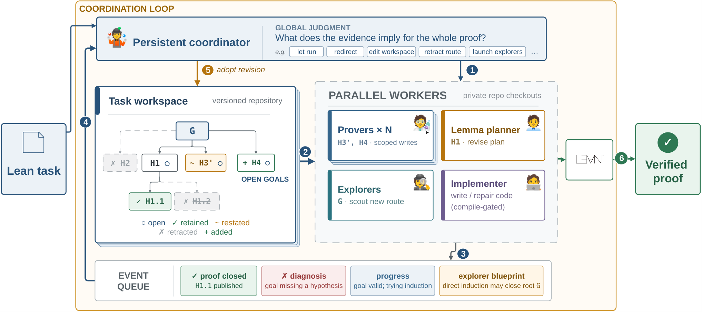

Builds an agentic LLM harness that coordinates parallel workers in a shared Lean 4 workspace to prove theorems and synthesize verified code, all checked by Lean.
Abstract
Lean is increasingly used to verify mathematical proofs and software produced by LLM agents, but writing formal proofs remains hard. Existing prover systems take a divide-and-conquer approach that recursively decomposes hard proof obligations into easier lemmas and splits again any lemma that resists proof. However, a lemma can resist proof for different reasons, including insufficient guidance, a false statement, or a flaw in the decomposition that produced it. Existing systems cannot tell these apart as a failed attempt reports little beyond its failure, and responses are confined to the failing node without considering the rest of the proof or revising the plan above it. The system may thus keep decomposing obligations along a flawed proof direction until the budget runs out, causing the whole proof attempt to fail. We introduce Maestro, a Lean prover harness that handles failures through global coordination. Provers report why they failed, not just that they failed, and a coordinator that sees the whole proof chooses an appropriate response, such as guiding a stuck prover, correcting a false lemma, or retracting a flawed subtree and replanning it. The same harness extends to verified code synthesis, where a checked counterexample sends the code back for repair. We evaluate Maestro with four frontier LLMs on seven mathematics and three software verification benchmarks. It proves more targets than each model's native coding agent (Claude Code or Codex) on every benchmark the agent has not already saturated, with the largest gains on research-level mathematics. With Claude Opus 5, it discovers its own proofs of 34 of the 48 theorems in the June 2026 release of arXivLean, against 19 for the native agent. It also outperforms all published prover systems on every benchmark they share, solving 669/672 PutnamBench, 59/60 Lean-IMO-Bench, and 6/6 IMO 2026.
Problem
Recursive-decomposition Lean provers handle failures locally. They cannot tell whether a lemma failed because the prover lacked guidance, the statement is false, or the decomposition above it is flawed. As a result they can keep decomposing along bad routes until the budget runs out.
Approach
Maestro keeps a shared Lean 4 workspace and dispatches parallel workers: provers, local lemma planners, free-form explorers, and, for verified coding, implementation workers. Each worker reports why it failed, not only that it failed. A global coordinator reads these reports and chooses a response: guiding a stuck prover, correcting a false lemma, or retracting and replanning a subtree. Checked counterexamples yield machine-verified falsifications, or send code back for repair.

Figure 1: Maestro ’s coordination loop. The persistent coordinator 1 dispatches or redirects workers, which 2 attack open obligations in parallel and 3 report proofs, diagnoses, progress, or blueprints to a shared queue. The coordinator 4 consumes these events as they arrive and 5 revises the shared Lean workspace, here retracting H2 and H1.2 , restating H3 as H3’ , adding H4 , and keeping the pro
Results
Four frontier LLMs were evaluated as backbones on ten benchmarks. Maestro beats each model's native coding agent on every benchmark the agent has not already saturated. Its best results are 669/672 on PutnamBench, 59/60 on Lean-IMO-Bench, 6/6 on IMO 2026, and 34/48 on the June 2026 arXivLean release, surpassing all published prover systems on shared benchmarks.
Method
IMO'26 (6)
Putnam (672)
LIB (60)
aXL-06 (48)
FATE-X (100)
Claude Code
4
667
56
19
73
Maestro
6
669+2
59+1
34+2
90+6
Selected results with Claude Opus 5 (Claude Code vs Maestro); a+b = proven + falsified